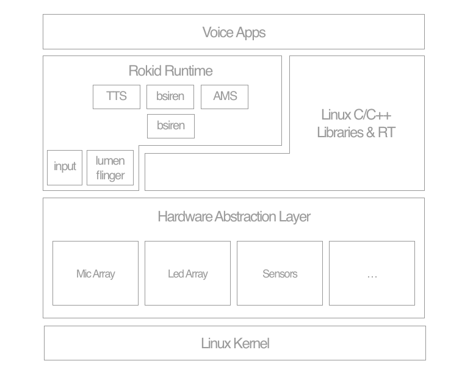

开发者社区 Linux 设备开发引导
支持的开发板
| 芯片厂商 | 芯片型号 | 开发板 | 编译框架 | 状态 |
|---|---|---|---|---|
| Amlogic | A112 | nana_l | buildroot | 支持 |
| Amlogic | S905D | nana_t | buildroot | 支持 |
| Amlogic | S905D | rm101 | buildroot | 支持 |
| Amlogic | S905D | rp102 | buildroot | 可移植 |
| Amlogic | A113 | nana_m | buildroot | 开发中 |
系统架构图

系统特性
| 模块 | 功能介绍 | 代码位置 | 实现语言 | 状态 |
|---|---|---|---|---|
| AMS | Application Manager Service Rokid语音应用的生命期调度、事件分发框架 | robot/openvoice/ams | C | 开发中 |
| Speech SDK | 封装了与Rokid云服务交互协议，包括ASR、NLP、TTS等开发服务 | robot/openvoice/speech | C++ | 支持 |
| Blacksiren SDK | 输入麦克风数据，经内部拾音算法及云端服务（调用SpeechSDK），输出语音识别结果、各种拾音事件 | robot/openvoice/blacksiren | C++ | 支持 |
| Runtime Service | 将Blacksiren封装成服务，后续会考虑嵌入到AMS中 | robot/runtime | C++ | 支持 |
| TTS Service | 提供设备端的语音转文字服务 | robot/services/tts | C++ | 支持 |
| Lumenflinger | 提供灯光渲染服务 | robot/services/lumenflinger | C++ | 支持 |
| Bluetooth | 提供蓝牙功能 | C | 开发中 | |
| OTA | 系统升级 | C | 开发中 | |
| PulseAudio | 提供Audio服务及路由机制 | buildroot原生 | C | 支持 |
| 蓝牙配网服务 | 提供通过蓝牙来配置Wifi网络 | C | 开发中 | |
| 热点配网 | 提供通过设备开启热点方式来配置网络 | C | 开发中 | |
| CloudClient C版 | 实现Cloud Skill功能／应用支持（如天气、新闻、音乐等），适用小内存系统 | C | 开发中 | |
| CloudClient Nodejs版本 | 实现Cloud Skill功能／应用支持（如天气、新闻、音乐等）、适用大内存系统 | C | 开发中 | |
| Android ADB | 提供ADB支持，方便开发 | C++ | 支持 | |
| Android HAL | 提供Android HAL，方便实现Mic Array，Led Array， Sensor等 | C++ | 支持 | |
| Android Binder | 提供进程间通讯机制 | C++ | 支持 | |
| Input Manager | 提供按键、触摸、鼠标事件SDK | C++ | 开发中 | |
| 系统音量控制 | 提供系统及的音量控制服务 | C++ | 开发中 | |
| 灯光寻向指示 | 提供唤醒、对话时的寻向指示 | C++ | 开发中 |
编译
Amlogic芯片
Rokid对厂商代码的修改
U-Boot
修改了厂商代码，支持Rokid的板级配置目录
Kernel
修改了厂商代码，支持Rokid多型号板子的DST配置目录
BuildRoot Package
扩展的buildroot_external
rokid_br_external 是Rokid通过BuildRoot的external机制，将Rokid提供的包或第三方库的编译配置放在此处
FFWT
需要使用Rokid对该包的配置，核心的语音算法会依赖该动态库
NodeJS
需要使用Rokid对该包的配置，CloudClient NodeJS版会依赖该配置
编译指令
目前支持64位版本，32位因为任务重，拾音算法的32位库还没编译过，后续会支持
source rokid_br_external/build/setenv.sh
输出
You're building on Linux
Lunch menu...pick a combo:
1. nana_t_s905d_release
2. nana_l_a112_release
3. rm101_s905d_release
Which would you like? [2]
目前使用注意事项
# 关于刷机
如果你的设备是mini没有接串口，无法在U-Boot下进入刷机模式,请看如下指示： 刷机镜像是：output/rm101_s905d/images/aml_upgrade_package.img 先打开PC端的windows版的amlogic刷机工具，Amlogic也提供了linux版本。
mini让他进入update模式的指令（无串口，无法进入uboot的情况下）, adb shell登录到设备上，敲如下指令：
fw_setenv bootcmd "run update"
reboot
之后PC端的刷机程序就会检测到设备进入刷机模式，按软件的刷机提示刷机即可。
# 关于配置网络
由于目前配网模块还在开发中，需要手动配置：
vi /etc/wpa_supplicant.conf
将
4 network={
5 key_mgmt=NONE
6 }
修改为：
network={
ssid="你的WiFi网络名"
psk="你的密码"
}
然后启动网络
/etc/init.d/S42wifi stop
/etc/init.d/S42wifi start
# 关于U-Boot的jtag配置
由于Amlogic的jtag与Rokid音频输出的i2c配置采用相同端口，而目前代码中没有禁用调，需要在刷好机后，将U-Boot中的变量jtag设置为disable。在没有串口线的情况下，按如下操作设置：
fw_setenv jtag disable
reboot
# 关于启动PulseAudio
目前，两个问题需要手动操作下： 1、由于裁剪包引起PulseAudio会加载DBus模块失败，需要禁用掉PulseAudio对D-Bus模块的加载；
vi /etc/pulse/default.pa
用#号注释掉第108行，如下：
#load-module module-console-kit
2、由于我们目前没有把PulseAudio默认启动起来，需要手动启动一下； 做了第1步之后。 启动命令：
pulseaudio --start
停止命令：
pulseaudio -k
# 关于TTS
前提是pulseaudio已经正常启动。 如果tts服务没启动（后续会加入开机自启动），请手动启动下：
tts&
# 关于如何看到拾音结果
1、由于AMS还在开发中，无法与runtime服务抛出的识别结果或事件对接； 2、由于runtime进程已经配置了开机自启动，不会在屏幕上打出log； 3、由于runtime启动后，是在未初始化状态，需要对他初始化；
如果你想看到识别结果的日志，需要如下手动操作： a、先杀掉后台运行的runtime
killall -9 runtime
runtime #在前台启动，会有日志输出，但目前还是未初始化状态
初始化runtime方法，将staging/usr/bin/openvoice_test程序push到系统上，然后运行如下命令（前提，先保证WiFi网络通了）：
./openvoice_test init 0
./openvoice_test start 1
./openvoice_test netchg 1
这时，你唤醒若琪，语音对话“若琪今天天气怎么样”、“若琪放首张学友的歌” 在运行runtime的控制台上会打印出识别结果。